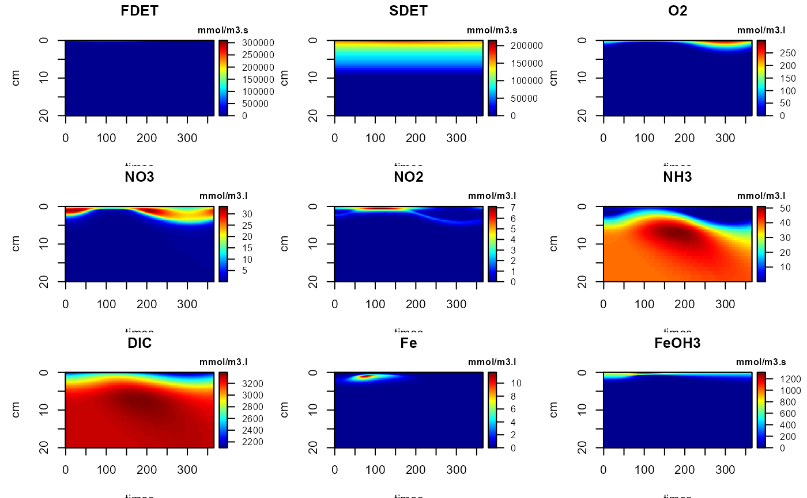
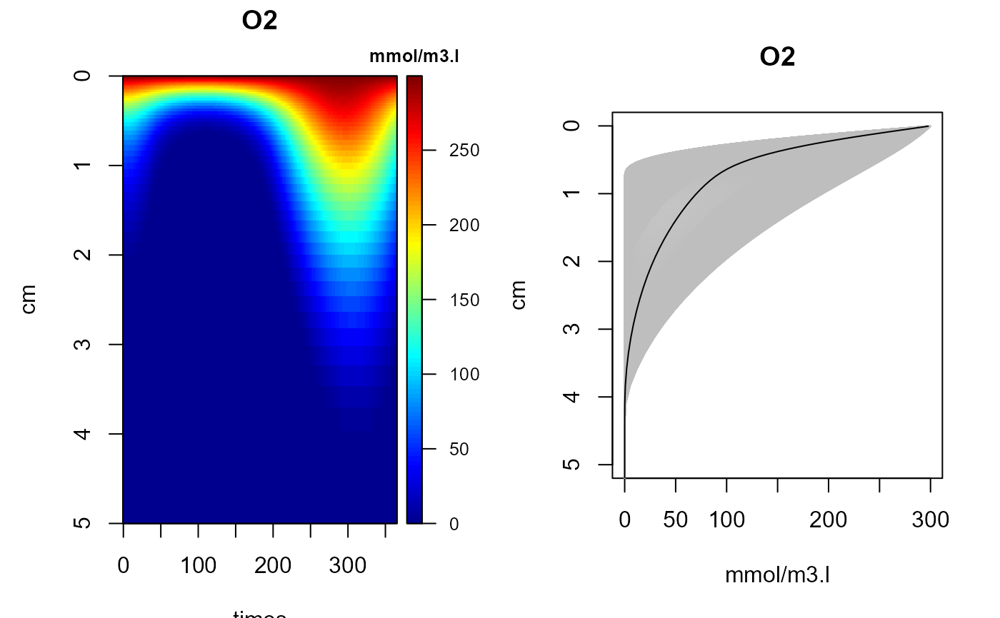
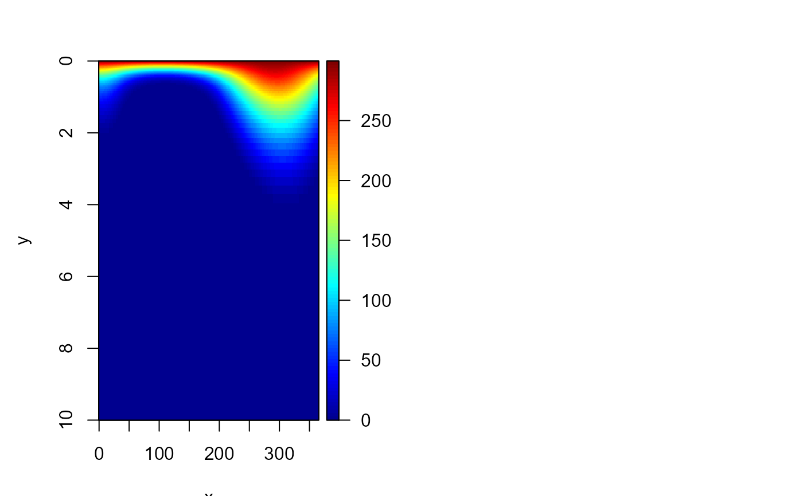
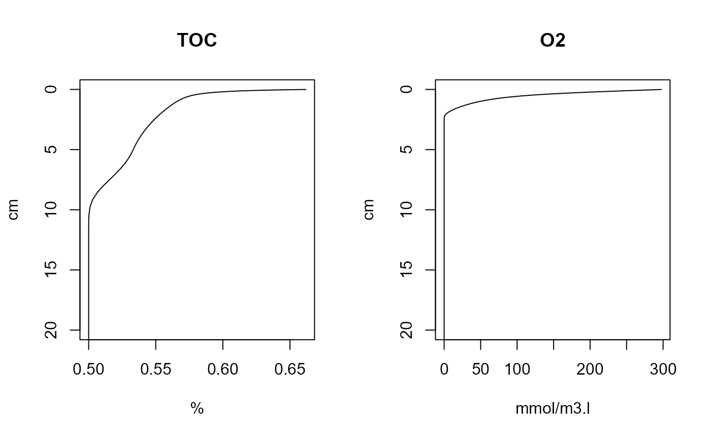

Utility functions for plotting FESDIA dynamic or steady-state model output.
FESDIAplot.Rdimage2D generates a 2-D image (x=time, y=depth) of the dynamic output.
matplot1D plots how profiles change with time. These plots will have the depth on the y-axis, and will plot all profiles.
plot plots steady-state profiles, with the depth on the y-axis.
Usage
# S3 method for class 'FESDIAdyn'
image2D(z, which, ylim = c(20, 0),
colkey = list(cex.clab = 0.8, line.clab = 0.5, cex.axis = 0.8), ...)
# Default S3 method
matplot1D(z, ...)
# S3 method for class 'FESDIAdyn'
matplot1D(z, which, ylim = c(20, 0),
type = "l", col = "grey", lty = 1, ...)
matplot1D (z, ...)
# S3 method for class 'FESDIAstd'
plot(x, ..., which, ylim = c(20, 0))Arguments
- z
object of class
FESDIAdyngenerated by FESDIAdyna.- x
object of class
FESDIAstdgenerated by FESDIAsolve.- which
The name(s) of the 1-dimensional output to be plotted versus time.
- ylim
The ranges of the y-axis. default it to have the y-axis extend downward, from 0 to 20 cm
- colkey
A list with specifications of the color key. The default is to have a smaller title (
cex.clab) and axis labels (cex.axis), the key title positioned close to the color key (line.clab), See colkey- type, col, lty
The type of plot, the color and type of the lines used for plotting
- ...
Any argument passed to the functions image2D and matplot.1D .
Examples
# =============================
# Plotting dynamic output
# =============================
out <- FESDIAdyna(CfluxForc = list(amp = 1))
image2D(out, which = 1:9)

image2D(out, which = "O2", ylim = c(5, 0), mfrow = c(1,2))
matplot1D(out, which = 3, col = "grey", ylim = c(5,0), mfrow = NULL)
O2mean <- FESDIA1D(out, "O2")
head(O2mean)
#> x por O2
#> 1 0.00498923 0.8934027 297.6858
#> 2 0.01530360 0.8801069 292.8746
#> 3 0.02631242 0.8664113 287.7195
#> 4 0.03806243 0.8523376 282.2069
#> 5 0.05060354 0.8379122 276.3249
#> 6 0.06398901 0.8231666 270.0640
lines(O2mean$O2, O2mean$x)

# The same but more elaborate
O2 <- subset(out, which = "O2")
image2D(O2, x = out[,"time"], y = FESDIAdepth(out), ylim = c(10,0))
# =============================
# Plotting steady-state output
# =============================
std <- FESDIAsolve()
plot(std, which = c("TOC", "O2"))

